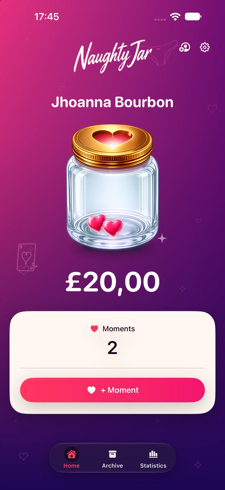

Regista cada momento
Um momento a dois, um valor definido por ti e um registo privado.
MOMENTOS · JAR · PRENDA
Regista cada momento íntimo, define o valor que queres guardar e deixa o JAR crescer. No Natal, o valor que guardaram ajuda-vos a escolher uma prenda especial.
Privado no teu dispositivo · sem conta obrigatória · sem publicidade

O JAR DE NATAL
Regista o momento, define o valor e mantém o Natal à vista.
FEITO PARA A VIDA REAL
A pessoa com quem estás não precisa de usar a app. Guardam momentos íntimos, enchem o JAR e escolhem uma prenda especial no Natal.
PORQUE É QUE FICA
Um momento a dois, um valor definido por ti e um registo privado.
Cada momento aproxima-vos do Natal e da prenda que escolherem.
No Natal, usam o valor acumulado para a comprar e oferecê-la.
O OBJETIVO
O NaughtyJar ajuda-te a reservar dinheiro teu para uma prenda concreta no Natal.
Conhecer o produto“Vivem o momento. O JAR cresce. No fim, compras-lhe uma prenda à medida do esforço.”
NaughtyJarPARA TI
Uma app privada para registares os vossos momentos, acumulares dinheiro e chegares à prenda.
Saber mais sobre NaughtyJar